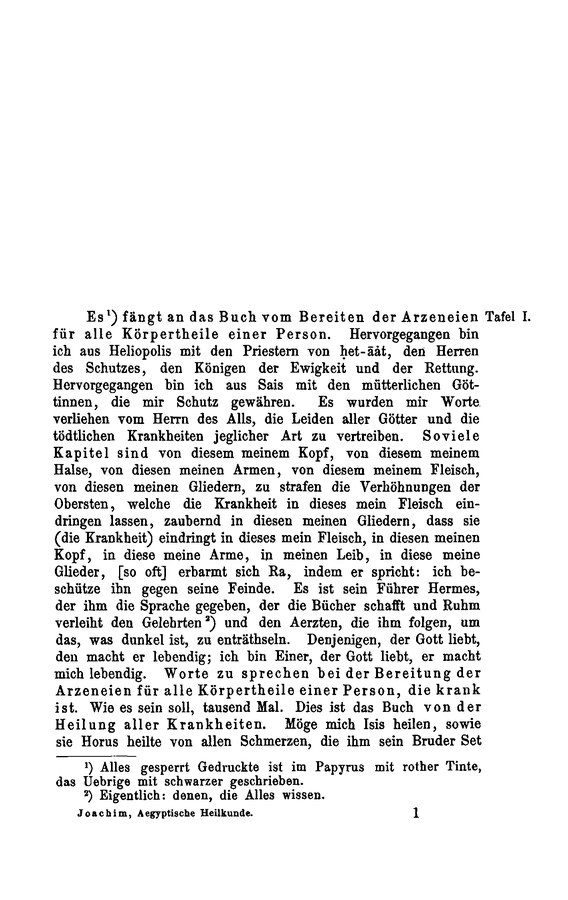

The current reader hydrates a whole book before the first word is readable. The redesign treats every page as a small set of independently fetched, content-hashed objects: the page becomes usable the moment its first layer arrives, and each further layer only enriches it.
01 · Delivery architecture
No API server in the read path. The client resolves catalog → manifest → per-page objects against plain object storage, and a scheduler orders fetches by layer priority and viewport distance.

02 · Streaming UX
The simulation below replays the exact layer order from the design brief — image tiles, source text, parallel, associations, entities — against E17, Zhongyao da cidian vol. 2 (1977), at the entry for Cnidium monnieri. The page is usable at every stage; each arrival only adds capability.